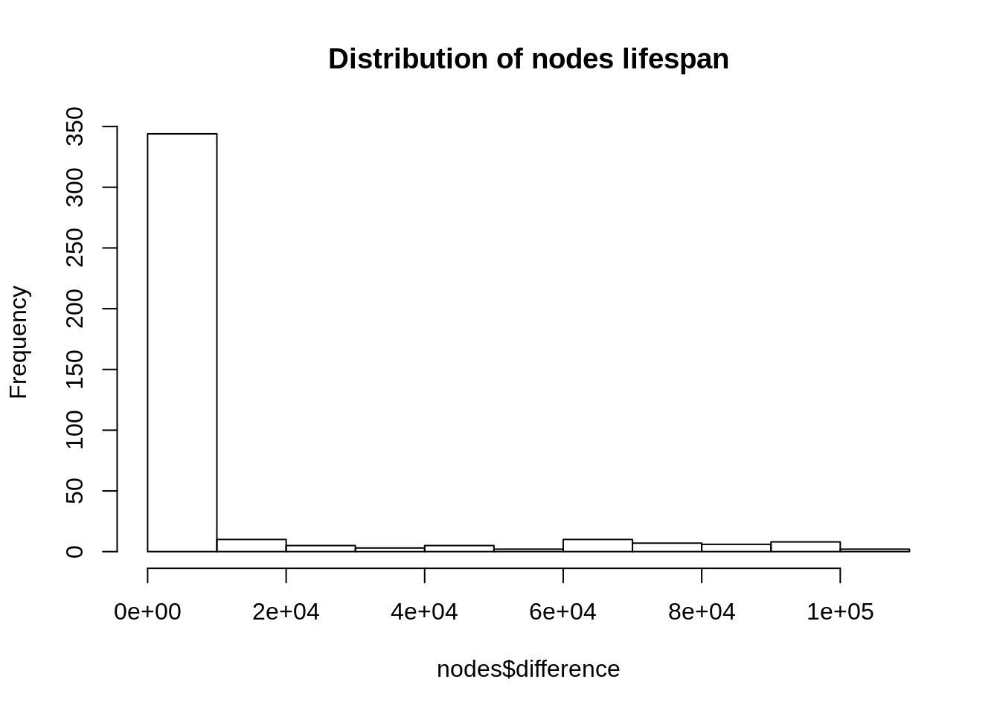

Chapter 11 Ephemeral
At this stage we’ve pretty much fully covered temporal graphs; nodes and edges appear over time on the graph. This already comes closer to reflecting reality if we assume that tweets are everlasting. In practice tweets have a life span; it is unlikely that old tweets from 2015 will be seen today. Therefore, on our graph, nodes and edges should appear then disappear after some time.
11.1 Collect
Let’s collect some tweets, just as we did previously.
# TK <- readRDS(file = "token.rds")
tweets <- search_tweets("#rstats filter:mentions", n = 200, token = TK, include_rts = FALSE)## Searching for tweets...## Finished collecting tweets!11.2 Build
Just as we did in the temporal chapter, we’ll pass created_at so that we know when tweets are created (when edges and nodes should appear), with one difference: we specify lifetime in our gt_dyn function.
net <- tweets %>%
gt_edges(text, screen_name, status_id, created_at = "created_at") %>%
gt_nodes() %>%
gt_dyn(60 * 60 * 6) %>%
gt_collect()The lifetime argument takes milliseconds, above, we set it 60 * 60 * 6 which is equal to 6 hours. As you might expect, we will rescale the timeframe as we did before but here we set the lifetime of a tweet before doing so.
So logically, if we take the difference between the appearance and the disappearance of an edge we should obtain 6 hours.
c(edges, nodes) %<-% net
edges$difference <- edges$end - edges$created_at
head(edges)## # A tibble: 6 x 6
## source target created_at end n_edges difference
## <chr> <chr> <dttm> <dttm> <int> <time>
## 1 _Coli… alyco… 2018-07-31 09:12:12 2018-07-31 09:12:12 1 0
## 2 _Coli… chris… 2018-07-31 12:50:11 2018-07-31 12:50:11 1 0
## 3 _Coli… Miles… 2018-07-31 14:05:13 2018-07-31 14:05:13 1 0
## 4 _Coli… tslum… 2018-07-31 14:05:13 2018-07-31 14:05:13 1 0
## 5 _Mirk… jcheng 2018-08-01 09:32:30 2018-08-01 09:32:30 1 0
## 6 _neil… ProdP… 2018-07-31 11:07:36 2018-07-31 11:07:36 1 0| source | target | created_at | end | n_edges | difference |
|---|---|---|---|---|---|
| _ColinFay | alycolumbus | 2018-07-31 09:12:12 | 2018-07-31 09:12:12 | 1 | 0 secs |
| _ColinFay | chrisvcsefalvay | 2018-07-31 12:50:11 | 2018-07-31 12:50:11 | 1 | 0 secs |
| _ColinFay | MilesMcBain | 2018-07-31 14:05:13 | 2018-07-31 14:05:13 | 1 | 0 secs |
| _ColinFay | tslumley | 2018-07-31 14:05:13 | 2018-07-31 14:05:13 | 1 | 0 secs |
| Mirkwood | jcheng | 2018-08-01 09:32:30 | 2018-08-01 09:32:30 | 1 | 0 secs |
| _neilch | ProdPad | 2018-07-31 11:07:36 | 2018-07-31 11:07:36 | 1 | 0 secs |
But how would this apply to nodes? Let’s plot the distribution of the lifespans of nodes (in milliseconds): the difference between their appearance and disappearance.
nodes$difference <- as.numeric(nodes$end - nodes$start)
hist(
main = "Distribution of nodes lifespan",
nodes$difference
)
We see that, unlike edges nodes are not all present on the graph for the same amount of time (6 hours for edges). There is a simple reason for it. If a user has tweeted at two (or more) different times in our dataset it will be present the from its first tweet to its second tweet (+ 6 hours).
11.3 Visualise
To tackle the visualisation let’s bring back our rescaling function. As a reminder this is so that the nodes do not take 1.3034491 to come and go but rather 60 seconds (60,000 milliseconds) as specified by the t argument.
#' @param x Date time column.
#' @param t Number of milliseconds to rescale to.
rescale <- function(x, t){
x <- as.numeric(x)
x <- (x - min(x)) / (max(x) - min(x))
x <- x * t
return(x)
}Then onto preparing the data. We do something similar as we did previously expect we also rescale end. There was no need to do that before as there was no need to do that since nodes and edges were only appearing on the graph and not disappearing.
library(dplyr)
SCALE <- 60000 # 60 seconds
nodes <- nodes %>%
nodes2sg() %>%
ungroup() %>%
mutate(
start = rescale(start, SCALE),
end = rescale(end, SCALE)
) %>%
select(id, label, size, start, end)
edges <- edges %>%
mutate(
id = 1:n(),
created_at = rescale(created_at, SCALE),
end = rescale(end, SCALE) + (60 * 60 * 6)
) %>%
select(id, source, target, start = created_at, end)Finally onto the visualisation, we again use sg_drop_nodes and sg_drop_edges, but this time, as we want them to also disappear we also use sg_drop_nodes and sg_drop_edges. With regard to the latter functions, since we only need to remove them from the graph we just need to specify their respective ids.
Then again, we can specify the x and y coordinates as well as the color of the nodes whcih we’ll base on clusters in order to make the graph look better.
nodes <- sg_get_layout(nodes, edges)
nodes <- sg_get_cluster(
nodes,
edges,
colors = c(
"#0084b4",
"#00aced",
"#1dcaff",
"#c0deed"
)
)## Found # 85 clusterssigmajs() %>%
sg_add_nodes(nodes, start, id, label, size, color, x, y, cumsum = FALSE) %>%
sg_add_edges(edges, start, id, source, target, cumsum = FALSE) %>%
sg_drop_nodes(nodes, id, end, cumsum = FALSE) %>%
sg_drop_edges(edges, id, end, cumsum = FALSE) %>%
sg_button(
"Launch",
c(
"add_nodes",
"add_edges",
"drop_nodes",
"drop_edges"
)
)The animation is triggered on page launch, reload the page if you missed it. There is quite a bit going on in this visualisation; perhaps we should round the time at which nodes and edges are created to the hour.
Let’s go ahead and do this.
net <- tweets %>%
mutate(
created_at = as.POSIXct(round(created_at, units = "hours"))
) %>%
gt_edges(text, screen_name, status_id, created_at = "created_at") %>%
gt_nodes() %>%
gt_dyn(60 * 60 * 6) %>%
gt_collect()
c(edges, nodes) %<-% net
nodes <- nodes %>%
nodes2sg() %>%
ungroup() %>%
mutate(
start = rescale(start, SCALE),
end = rescale(end, SCALE)
) %>%
select(id, label, size, start, end)
edges <- edges %>%
mutate(
id = 1:n(),
created_at = rescale(created_at, SCALE),
end = rescale(end, SCALE) + (60 * 60 * 6)
) %>%
select(id, source, target, start = created_at, end)
nodes <- sg_get_layout(nodes, edges)
nodes <- sg_get_cluster(
nodes,
edges,
colors = c(
"#0084b4",
"#00aced",
"#1dcaff",
"#c0deed"
)
)## Found # 85 clusterssigmajs() %>%
sg_add_nodes(nodes, start, id, label, size, color, x, y, cumsum = FALSE) %>%
sg_add_edges(edges, start, id, source, target, cumsum = FALSE) %>%
sg_drop_nodes(nodes, id, end, cumsum = FALSE) %>%
sg_drop_edges(edges, id, end, cumsum = FALSE) %>%
sg_button(
"Launch",
c(
"add_nodes",
"add_edges",
"drop_nodes",
"drop_edges"
)
)11.4 Dynamic layout
An issue you may observe has to do with the layout. The layout is calculated based on the full graph, but we never have the full graph on screen only a subgraph at every time step. A better way to layout the graph is to use a dynamic layout that adjusts to the visualisation as nodes and edges appear and disappear.
The forceAtlas2 layout algorithm does just that.
sigmajs() %>%
sg_add_nodes(nodes, start, id, label, size, color, x, y, cumsum = FALSE) %>%
sg_add_edges(edges, start, id, source, target, cumsum = FALSE) %>%
sg_drop_nodes(nodes, id, end, cumsum = FALSE) %>%
sg_drop_edges(edges, id, end, cumsum = FALSE) %>%
sg_force_start() %>%
sg_button(
"Launch",
c(
"add_nodes",
"add_edges",
"drop_nodes",
"drop_edges"
)
)